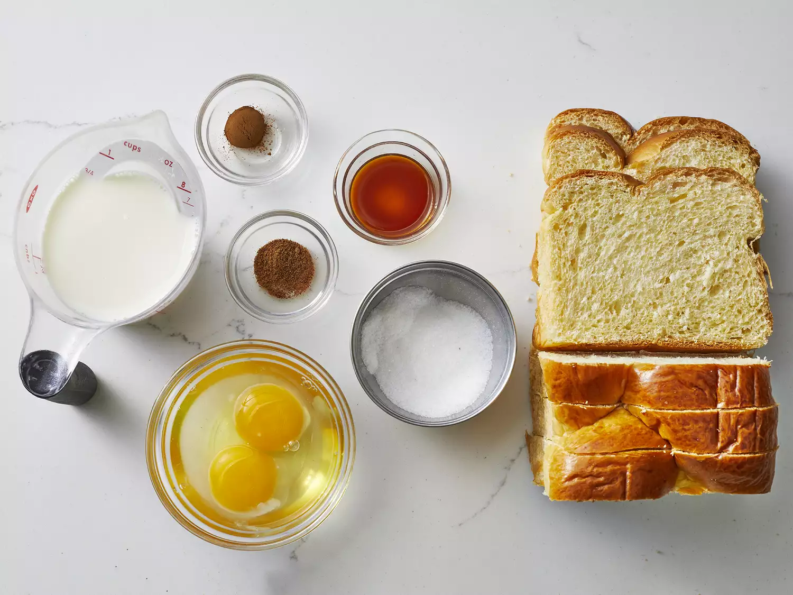

Toast

Description
Here's everything you need to know about making the best French toast of your life, including the best bread to use and what ingredients you need. Plus, get our best storage secrets and freezer hacks.
Ingredients
- White Bread
- Eggs
- Milk
- Vanilla and cinnamon
- Salt
- Butter
Steps
- Whisk milk, eggs, vanilla, cinnamon, and salt together in a shallow bowl.
- Lightly butter a griddle or skillet and heat over medium-high heat.
- Dunk bread in the egg mixture, soaking both sides.
- Transfer to the hot skillet and cook until golden, 3 to 4 minutes per side.
- Serve hot.